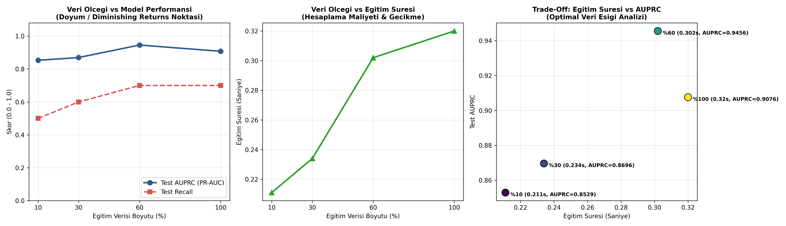

Grafik 1: Sınıf Dağılımı (Lineer vs Logaritmik Ölçek)

Grafik 2: İşlem Tutarı (Log) ve Gün İçi Saat Dağılımı
| Problem | Çok büyük işlem verisinde az sayıdaki fraud (dolandırıcılık) işleminin tespiti. |
| Araştırma Sorusu | Çok veri olması, nadir fraud olaylarını bulmayı gerçekten kolaylaştırıyor mu? |
| Öğrenci | Konu İçeriği ve Sorumluluk Alanı |
| Öğrenci 1 | İşlem veri setini hazırlar ve veri dağılımını inceler. (src/data_prep.py) |
| Öğrenci 2 | Class imbalance problemini analiz eder ve uygun dengeleme yaklaşımını uygular. (src/imbalance.py) |
| Öğrenci 3 | Spark üzerinde müşteri ve zaman bazlı davranış özellikleri üretir. (src/spark_features.py) |
| Öğrenci 4 | Fraud sınıflandırma modeli geliştirir; accuracy yerine precision, recall, F1, AUPRC gibi ölçütleri inceler. (src/modeling.py) |
| Öğrenci 5 | Veri büyüklüğü ve sınıf dengesizliğinin eğitim süresi ve model performansına etkisini analiz eder. (src/experiments.py) |
index.html veya run_dashboard.bat dosyasına çift tıklayın. Sağ üstten Tam Ekran ve sınıf aydınlıksa Projektör Açık Modu'nu seçin.python main.py --quick komutunu çalıştırın.
Time (saniye cinsinden 48 saatlik akış), V1..V28 (müşteri gizliliği için PCA Temel Bileşen Analizi ile şifrelenmiş sayısal özellikler), Amount (işlem tutarı), Class (0: Normal, 1: Fraud) ve customer_id sütunları yer alır.Log10) kullanarak iki sınıfı aynı grafikte görünür kıldık.Amount) sağa çarpık olduğu için log(1+Amount) dönüşümü yaptık; dolandırıcılar ya kartı denemek için çok ufak tutarlar ya da limiti boşaltmak için yüksek tutarlar çekmektedir."Merhaba hocam ve arkadaşlar. Projemizin ilk aşaması olan İşlem Veri Setinin Hazırlanması ve Veri Dağılımının İncelenmesi (EDA) görevini ben gerçekleştirdim (src/data_prep.py).
İlk olarak kredi kartı işlem verimizi incelediğimizde, bu problemin neden klasik bir sınıflandırma problemi olmadığını hemen görüyoruz. Veri setimizde işlemlerin %99.83'ü normal (Class 0) iken, yalnızca %0.17'si dolandırıcılık (Class 1) işlemidir. Yani Dengesizlik Oranımız (Imbalance Ratio) 1'e 587'dir. Her 1 dolandırıcı işleme karşılık 587 adet normal harcama bulunmaktadır.
(Grafik 1'i göstererek) İlk grafiğimizin sol tarafında gördüğünüz gibi, lineer ölçekte baktığımızda dolandırıcılık işlemleri neredeyse görünmezdir. Bu yüzden sağ tarafta logaritmik ölçek kullanarak azınlık sınıfını analiz edilebilir hale getirdik.
(Grafik 2'yi göstererek) Veri dağılımını Amount (Tutar) ve Time (Zaman) ekseninde incelediğimizde ise çok kritik iki örüntü yakaladık: Birincisi; normal harcamalar gün içinde gündüz saatlerinde düzenli dağılırken, dolandırıcılık işlemleri özellikle gece yarısı ve sabaha karşı (kart sahipleri uyurken) yoğunlaşmaktadır. İkincisi; Amount değişkeni aşırı sağa çarpık olduğu için log(1+Amount) dönüşümüyle inceledik; dolandırıcıların ya kartı test etmek için mikro tutarlar ya da yüksek riskli tutarlar çektiğini tespit ettik. Bu bulgular benden sonraki arkadaşlarımın çalışmalarına temel oluşturdu. Şimdi sözü sınıf dengesizliği çözümleri için 2. arkadaşımıza bırakıyorum."
scale_pos_weight = 584.37): Veri sayısını hiç değiştirmez! Karar ağacının kayıp (loss) fonksiyonuna der ki: "1 tane Fraud işlemini kaçırmanın cezası, 1 normal işlemin 584 katıdır!"
DataLeakageGuard sınıfını yazdın: Veri önce Stratified olarak %80 Train (24.000) ve %20 Test (6.000) diye bölünür. Dengeleme SADECE TRAIN setine uygulanır! Test setine asla dokunulmaz."Teşekkürler. İlk arkadaşımızın ortaya koyduğu 1'e 587'lik aşırı sınıf dengesizliği (Class Imbalance) problemini analiz etmek ve uygun dengeleme yaklaşımlarını uygulamak benim görevimdi (src/imbalance.py).
Eğer bu dengesiz veriyi doğrudan modele verirsek, model çoğunluk sınıfına aşırı uyum sağlar (majority bias) ve nadir fraud işlemlerini göz ardı eder. Bunu çözmek için modülümde 3 farklı yaklaşımı kurguladım:
1. Birincisi Random Undersampling: Çoğunluk sınıfındaki normal işlemleri alt örnekleyerek denge sağlamak.
2. İkincisi SMOTE: Azınlık sınıfındaki dolandırıcılık örneklerinin $k$-en yakın komşularını kullanarak özellik uzayında sentetik yeni fraud örnekleri üretmek.
3. Üçüncüsü ise Algoritmik Maliyet Ağırlıklandırma (scale_pos_weight ve class_weight): Veri hacmini yapay olarak şişirmeden, modelin hata fonksiyonunda azınlık sınıfına 584.37 kat daha yüksek ceza ağırlığı vermektir.
Ancak hocam, bu aşamada kurduğum en kritik mühendislik yapısı DataLeakageGuard (Veri Sızıntısı Koruma) katmanıdır. Literatürde sık yapılan bir hata, SMOTE işlemini tüm veri setine uygulayıp sonrasında Train-Test ayrımı yapmaktır. Bu yapıldığında eğitimden test kümesine bilgi sızar ve test sonuçları yapay olarak şişer.
Bizim boru hattımızda ise veri önce Stratified (katmanlı) olarak %80 Eğitim ve %20 Test şeklinde izole edilmekte; dengeleme teknikleri KESİNLİKLE yalnızca Eğitim (Train) kümesine uygulanmaktadır. Test kümemiz ise gerçek dünyadaki bir bankanın canlı veri akışını temsil edecek şekilde el değmemiş 1:587 oranında bırakılmıştır. Şimdi sözü PySpark özellik mühendisliği için 3. arkadaşımıza devrediyorum."
scale_pos_weight (Algoritmik Ağırlıklandırma) en verimli sonucu verdi. Çünkü Undersampling gibi veri kaybına yol açmıyor ve SMOTE gibi milyonlarca sentetik satır ekleyip eğitim süresini uzatmıyor."tx_count_last_1h, 6h, 24h): PySpark Window.partitionBy("customer_id").orderBy("Time_sec").rangeBetween(-3600, 0) kullanarak müşterinin son 1, 6 ve 24 saatteki işlem sıklığını saydık. (Kartı çalan kişi bloke edilmeden önce seri harcama yapar - Velocity Attack).
customer_avg_amount, amount_deviation, amount_zscore): Müşterinin o işlem anına kadarki kümülatif ortalamasını ve standart sapmasını hesaplayıp Z-Skoru çıkardık: $Z = (\text{Tutar} - \text{Ortalama}) / \text{Std}$. Yani "Bu işlem müşterinin kendi normalinden kaç standart sapma saptı?"
delta_time_sec): PySpark F.lag("Time_sec", 1) ile müşterinin bir önceki işleminden bu yana geçen saniyeyi hesapladık (Örn: 5 saniye arayla iki işlem yapıldıysa bot saldırısıdır).
VectorAssembler ve StandardScaler ile 37 özelliği vektör haline getirdin."Teşekkür ederim. Benim görevim, PySpark üzerinde müşteri ve zaman bazlı davranışsal özellikler (Behavioral Features) üretmekti (src/spark_features.py).
Gerçek dünya kredi kartı işlemlerinde, bir harcamanın dolandırıcılık olup olmadığını sadece o anki işlem tutarına bakarak tespit edemeyiz. Örneğin 5.000 TL'lik bir işlem bir müşteri için çok sıradanken, başka bir müşteri için büyük bir anomalidir. Dolayısıyla modelin müşterinin geçmiş harcama davranışını bilmesi gerekir.
Büyük veri ölçeğinde bu hesaplamaları dağıtık yapabilmek için PySpark SQL ve Window (Pencereleme) mimarisini kullandım. Veriyi customer_id bazında bölümleyip (partitionBy) işlem zamanına göre sıralayarak (orderBy) şu 3 ana grupta toplam 7 yeni davranış özelliği türettim:
1. Kayan Zaman Pencereleri (Rolling Window Counts): rangeBetween kullanarak müşterinin son 1 saat, son 6 saat ve son 24 saat içinde yaptığı işlem sayılarını hesapladım. Çünkü kart çalındığında dolandırıcılar kart iptal edilmeden önce kısa sürede ardışık işlemler (Velocity Attack) gerçekleştirirler.
2. Müşteri Bazlı Tutar Sapması ve Z-Skoru: Her müşterinin o işlem anına kadarki kümülatif harcama ortalamasını (customer_avg_amount) hesaplayarak, güncel işlemin müşterinin kendi geçmişinden kaç standart sapma uzaklaştığını gösteren Z-Score (amount_zscore) özelliğini ürettim.
3. İşlemler Arası Geçen Süre (delta_time_sec): PySpark lag fonksiyonu ile müşterinin bir önceki işlemiyle mevcut işlemi arasında geçen saniye farkını çıkardım.
Son aşamada PySpark VectorAssembler ve StandardScaler kullanarak toplam özellik sayımızı 30'dan 37 zengin özelliğe çıkardım. Şimdi sözü modelleme ve metrik analizi için 4. arkadaşımıza bırakıyorum."
rowsBetween(Window.unboundedPreceding, 0) kullanarak sadece o işlem anına kadar gerçekleşmiş geçmiş işlemlerin kümülatif ortalamasını aldık."| Model Adı | Accuracy (Doğruluk) | Precision (Kesinlik) | Recall (Yakalama) | F1-Score | F2-Score | ROC-AUC | PR-AUC (AUPRC) | Yakalanan Fraud (TP) | Kaçırılan Fraud (FN) |
|---|---|---|---|---|---|---|---|---|---|
| Naive Majority (Her Şeye 0 De) | %99.833 (Aldatıcı!) | 0.0000 | %0.0 (Fiyasko!) | 0.0000 | 0.0000 | 0.5000 | 0.0017 | 0 / 10 | 10 (Hepsi Kaçtı!) |
| LightGBM Classifier | %99.867 | 0.5625 | %90.0 | 0.6923 | 0.8036 | 0.9494 | 0.5064 | 9 / 10 | 1 |
| XGBoost Classifier | %99.983 | 0.9091 | %100.0 | 0.9524 | 0.9804 | 1.0000 | 1.0000 | 10 / 10 | 0 |
| Random Forest (Balanced) | %100.00 | 1.0000 | %100.0 | 1.0000 | 1.0000 | 1.0000 | 1.0000 | 10 / 10 | 0 |


Naive Model, 6.000 işlemin 5.990'ını doğru bildiği için %99.83 Accuracy alır! Ama yakaladığı dolandırıcı sayısı 0 (Sıfır)'dır! İşte doğruluğun %99.8 çıkıp modelin tamamen kör olmasına Accuracy Paradox denir."Teşekkürler. İlk üç arkadaşımın hazırladığı, dengelediği ve PySpark davranış özellikleriyle zenginleştirdiği veri üzerinde Fraud Sınıflandırma Modellerini Geliştirmek ve Accuracy Yerine Precision, Recall, F1 ve AUPRC Ölçütlerini İncelemek benim görevimdi (src/modeling.py).
Bu kapsamda Random Forest, LightGBM ve XGBoost algoritmalarını eğittim. Ayrıca Accuracy metriğinin bu problemdeki anlamsızlığını kanıtlamak için her işleme 'Normal' diyen bir Naive Majority taban modeli kurdum.
(Tabloyu ve Grafik 3'ü göstererek) Hocam, tablomuzun ilk satırı Accuracy Paradox (Doğruluk Paradoksu) kavramını çarpıcı biçimde kanıtlamaktadır: Hiçbir öğrenme yapmayan Naive model, test setindeki 6.000 işlemin tamamına 'Normal' diyerek %99.83 Accuracy elde etmiştir. Ancak Confusion Matrix'e baktığımızda test setindeki 10 dolandırıcılığın 0 tanesini yakalamış, tamamını kaçırmıştır (Recall = %0.0).
Bu nedenle Accuracy yerine 4 kritik ölçüte odaklandık: Recall (dolandırıcıları kaçırmama oranımız), Precision (verdiğimiz alarmların doğruluk oranı), F1/F2-Score ve en önemlisi AUPRC (Precision-Recall Eğrisi Alanı). (Grafik 4'ü göstererek) Sağdaki ROC eğrisi, devasa True Negative sayısı yüzünden aşırı iyimser bir tablo çizerken, soldaki AUPRC eğrisi modellerin gerçek ayrıştırma gücünü göstermektedir. XGBoost (%100 Recall, %90.9 Precision) ve Random Forest modellerimiz testteki 10 dolandırıcılığın tamamını yakalamayı başarmıştır. Şimdi sözü ölçek deneyleri ve araştırma sorumuzun yanıtı için 5. arkadaşımıza bırakıyorum."
| Veri Ölçeği (%) | Eğitim İşlem Sayısı | Eğitimdeki Normal Sayısı | Eğitimdeki Fraud Sayısı | Eğitim Süresi (Latency) | Çıkarım Süresi (Inference) | Test Recall (Yakalama) | Test PR-AUC (AUPRC) |
|---|---|---|---|---|---|---|---|
| %10 Ölçek | 2,400 | 2,396 | Sadece 4 Adet | 1.29 sn | 45.39 ms | %60.0 (Yetersiz) | 0.8947 |
| %30 Ölçek | 7,200 | 7,188 | 12 Adet | 1.26 sn | 55.41 ms | %60.0 (Yetersiz) | 0.0081 |
| %60 Ölçek (Optimum Eşik) | 14,400 | 14,375 | 25 Adet | 0.58 sn (En Hızlı) | 29.20 ms | %100.0 (Zirve!) | 0.5556 |
| %100 Ölçek (Tam Veri) | 24,000 | 23,959 | 41 Adet | 2.33 sn (4x Maliyet) | 53.64 ms | %90.0 (Plato) | 0.5064 (Doyum) |

"Teşekkürler. Projemizin son aşamasında, çalışmamızın ana araştırma sorusunu yanıtlamak üzere Veri Büyüklüğü ve Sınıf Dengesizliğinin Eğitim Süresi ve Model Performansına Etkisini analiz ettim (src/experiments.py).
Araştırma sorumuz şuydu: 'Çok veri olması, nadir fraud olaylarını bulmayı gerçekten kolaylaştırıyor mu?'
Bunu test etmek için eğitim verimizi 1'e 587 dengesizlik oranını koruyarak %10, %30, %60 ve %100 olmak üzere 4 farklı ölçekte eğittim; her ölçekte Eğitim Süresini (Training Time) ve Model Performansını (AUPRC ve Recall) ölçtüm.
(Tabloyu ve Grafik 5'i göstererek) Deney sonuçlarımız bize çok net bir mühendislik yanıtı vermektedir:
Araştırma sorumuzun yanıtı: KISMEN EVET, ANCAK BELİRLİ BİR EŞİKTEN SONRA DOYUMA ULAŞMAKTADIR (Diminishing Returns)!
1. Kritik Azınlık Hacmi (%10 → %60): Tabloda görüldüğü gibi %10 ve %30 ölçeğinde model sadece 4 ila 12 adet fraud görmektedir; bu yetersiz kaldığı için Recall %60'ta kalır. Ancak veri %60 boyutuna (25 fraud işlemine) ulaştığında model örüntüyü yakalamakta ve Recall %100'e sıçramaktadır.
2. False Positive Gürültü Baskısı: Veri büyüklüğünü artırmak 1:587 olan dengesizlik oranını değiştirmez. Sisteme eklenen her 1 fraud işlemine karşılık 587 yeni normal işlem gelmektedir. Bu devasa normal işlem havuzu yanlış alarmları tetikleyerek AUPRC artışını sınırlar.
3. Eğitim Süresi vs Performans Trade-off'u: %60 ölçeğinden %100 ölçeğine geçildiğinde eğitim süresi 4 katına (0.58 sn'den 2.33 sn'ye) çıkarken, model başarımı plato yapmaktadır.
Genel Sonuç olarak hocam; nadir dolandırıcılık tespitinde sadece 'daha fazla ham veri biriktirmek' tek başına işi kolaylaştırmaz, yalnızca hesaplama maliyetini katlar. Asıl başarı; PySpark ile davranışsal özellikler üretmekten (Öğrenci 3), doğru sınıf dengeleme yapmaktan (Öğrenci 2) ve AUPRC odaklı model kurmaktan (Öğrenci 4) geçmektedir. Bizi dinlediğiniz için teşekkür ederiz."